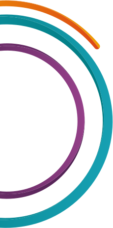
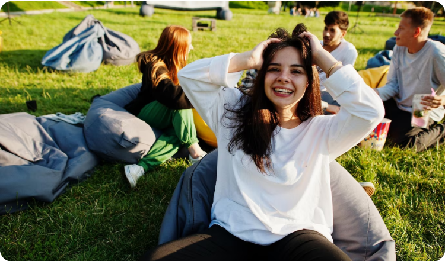
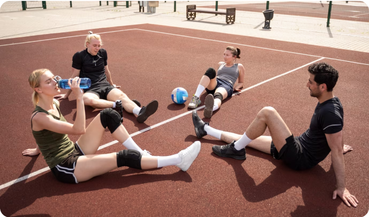
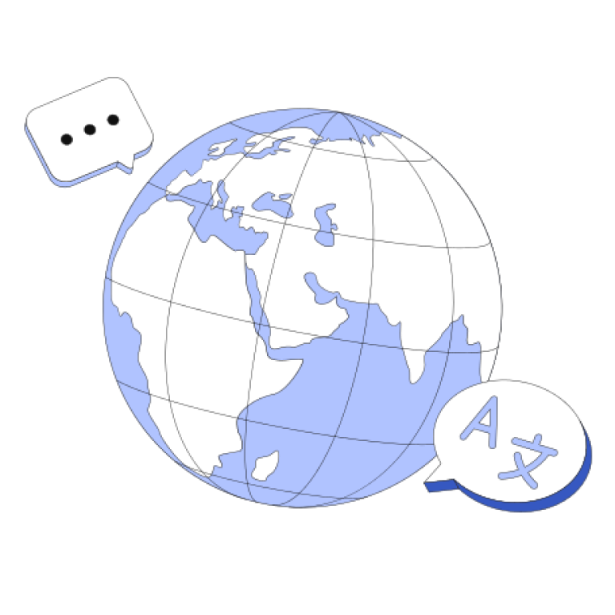
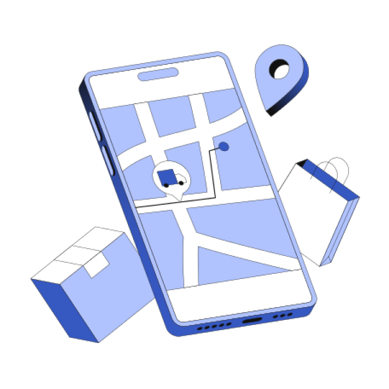
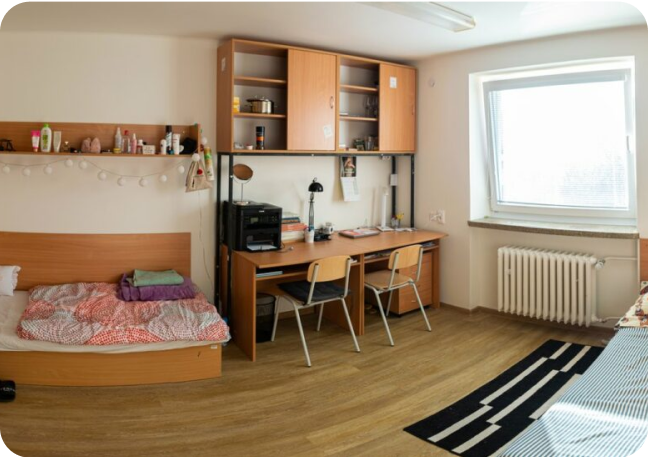
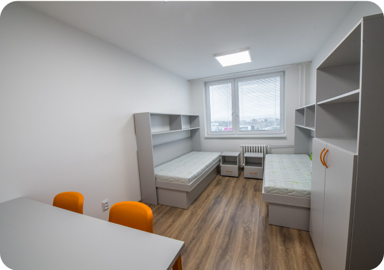

Покроковий план гарантованого вступу на бюджет до ВНЗ у Словаччині
Вітаю у другій частині маршрутної карти!
З Вами Євген Дубенко — засновник освітньої агенції «Educate Agency» — №1 в Україні за кількістю
абітурієнтів, які стали студентами ВНЗ в країнах ЄС з нашою допомогою.
В першій частині ми порівняли декілька країн ЄС для вступу
до ВНЗ та торкнулись надважливого питання з
приводу стратегії побудови кар’єри в Європі, яка починається з вірно обраного абітурієнтом та
батьками
напрямку навчання та спеціалізації.
В другій частині ми пройдемось по усім базовим крокам для гарантованого вступу на
бюджет до ВНЗ у
Словаччині, про які вже більш детально та з максимальними подробицями поговоримо на вебінарі,
а також ми торкнемось наступних питань:
Як отримувати стипендію від 300 € до 1000 €
Як потрапити в класний державний гуртожиток
Як влаштувати побут та жити цікавим студентським життям
Які витрати планувати на вступну кампанію
Отже, будь ласка, уважно вивчіть матеріал на цій сторінці та
обов’язково доєднуйтесь до онлайн трансляції.
❗️Посилання на вебінарну кімнату ви отримаєте перед стартом етеру в Viber
або Telegram та в SMS.
Перед тим як перейдемо безпосередньо до покрокового плану для вступу на бюджет до
ВНЗ у Словаччині, хочу звернути Вашу увагу:
в країнах ЄС, зокрема і в Словаччині, немає непрестижних або низькооплачуваних
професій для людей з
вищою освітою
абітурієнт може обрати будь яку майбутню професію за покликанням серця,
своїми інтересами та
здібностями і не хвилюватись, що буде працювати на низькооплачуваній роботі
як мінімум за 3 роки навчання на бакалавраті в Словаччині студент долучається до
європейської
спільноти, системи цінностей та менталітету (Словаччина є членом ЄС з 2004 року)
під час навчання на бакалавраті студент може поїхати до інших країн, якщо
бажає продовжити навчання
на магістратурі не в Словаччині та попередньо визначитись з країною, де хоче
будувати кар’єру
якщо студент має намір будувати кар’єру в іншій країні, то він матиме змогу
вивчати відповідну мову
поки навчається на бакалавраті в Словаччині
після бакалаврату в Словаччині студент може вступити на
магістратуру на бюджет до різних державних
університетів Європи та світу за своєю спеціальністю, закінчити магістратуру та розпочати
кар’єру в
обраній країні в якості випускника магістратури з дипломом міжнародного зразка
Перспектива дійсно цікава і абсолютно досяжна для абітурієнтів з України, якщо
вони та їх батьки
виважено поставляться до створення стратегії побудови кар’єри їх дітей в ЄС.
А Словаччина є прекрасним стартом для реалізації такої стратегії, як в
фінансовому плані, так і через
подібність на 68% словацької мови до української.
Отже, першим кроком від абітурієнтів і батьків є визначитись з напрямком навчання
та майбутньої професії, пройти тестування з профорієнтації та обрати університет та факультет.
Всі необхідні кроки ви можете узгодити на консультації і
побудувати ваш персональний план вступної
кампанії з нашими експертами з профорієнтації та кураторами.
Зараз у вас є можливість залишити заявку на таку консультацію та отримати її БЕЗКОШТОВНО*.
*кількість місць на безкоштовну консультацію обмежена
Натискайте на кнопку, заповнюйте свої дані та вкажіть, будь ласка, приблизний
напрямок навчання та
спеціальності, на який ви орієнтуєтесь і наші експерти зв’яжуться з вами протягом 24 годин
❗️І ще одна важлива думка, перед тим, як перейдемо до покрокового плану вступної
кампанії
Шлях до побудови кар’єри в Європі займає певний час — цей час є процесом на шляху до досягнення
головної
цілі, важливої та без перебільшення доленосної на даному етапі життя абітурієнта і важливо,
проходячи цей
процес, ніколи не забувати про те, для чого прикладаються ці всі зусилля — завжди тримати ціль на
горизонті і крок за кроком до неї наближатись.
Але дуже важливо, щоб цей процес не був “каторгою” для студента, а щоб це була важлива, цікава і
корисна
пригода — щоб студент жив повноцінним життям.

Кілька неперсічних деталей зі студентського життя в
Словаччині, про які варто знати
1Як влаштувати побут та жити цікавим студентським життям?
Різноманіття позанавчального життя
В першу чергу варто розуміти, що студентські кампуси (містечка) в Словаччині дійсно схожі на ті, що ми
звикли бачити у кіно і там безперестанно б’є ключ справжнього студентського життя.
При кожному університеті є безліч спільнот за інтересами та гуртків:
театральний гурток
спортивні секції
власна газета
інтернет-телебачення
університетське радіо
літературний і музичний гуртки
танцювальні класи
образотвоче мистецство
літні та зимові табори
подорожі та екскурсії Європою
відвідування тематичних конференцій та заходів
наукові дослідження


І так, кожен студент має свій міжнародний студентський квиток, який діє по всьому ЄС і дає
неймовірну
кількість можливостей та знижок на різноманітні послуги і багато привілеїв.
Маючи таку кількість різних бонусів та знижок на кожному кроці, можна спокійно кілька разів на семестр
дуже заощадливо подорожувати в інші країни Європи.
Отже, насправді, студентське життя в Словаччині дійсно більше схоже на картинку з фільмів, ніж на те, що
батьки випускників пам'ятають про своє.
Це дуже хороше середовище для розкриття інтересів і талантів
студентів
та широкий вибір можливостей для
самореалізації.
Можливість мати додаткові власні кошти
В Словаччині дуже вітається підробіток студентів і безліч компаній готові запросити студента навіть на
кілька годин попрацювати та провзаємодіяти.
Це можуть бути абсолютно різні варіанти роботи для студентів: на пошті, в ресторані, в бібліотеці, в
супермаркеті, в готелі, в торговому центрі і т.д.
Оплата праці для студентів складає 4,5-5 € на годину.
Тобто, якщо в суботу попрацювати 8-10 годин, то можна заробити собі додатково 40-50 € на тиждень.
За бажанням студента можна підпрацьовувати щосуботи і отримувати додаткові 150-200 € на місяць.
Доречі, це дуже позитивний досвід та швидка соціалізація у європейському суспільстві.
Така взаємодія з суспільством відкриває для студента більше можливостей для власної реалізації, заняття
хоббі та подорожей Європою (авіаквитки на лоукостери для студентів за
15-20 € дійсно існують).
2Як отримувати стипендію від 300 € до 1000 € на місяць?
Erasmus+ — міжнародна програма обміну студентами, яка діє вже більше 30 років між ВНЗ Європи та
світу.
Період навчання по обміну триває
від 3 до 12 місяців.
Якщо студент визначається в рамках своєї стратегії побудови кар’єри в Європі, що він хоче вступати на
магістратуру та починати кар’єру в іншій країні ЄС, то скориставшись програмою Erasmus+, ще
навчаючись
на бакалавраті в Словаччині, він може поїхати в іншу країну і можливо навіть до того університету, в
якому має за мету продовжити навчання на магістратурі.
Учаснику студентського обміну в рамках програми Erasmus+ оплачують абсолютно все: навчання,
проживання,
авіаквитки та медичну страховку!
Плюс до всього студент отримує щомісячну допомогу від Erasmus+, яка покриває всі інші витрати на
харчування та побут. Стипендія та її розмір зазвичай залежить від країни, до якої прямує старшокурсник —
від 300 € до 1000 € на місяць.
❗️Більш детально про те, як Вам скористатись
цією програмою обміну будемо обговорювати на вебінарі.
Єдине, чим хочеться підсумувати вище сказане — для Вас відчинені двері до надзвичайно великих
можливостей та перспектив з прекрасною відправною точкою через вступ на бюджет до ВНЗ Словаччини!
Але важливо зуміти своєчасно скористатись цією можливістю
Наш з Вами покроковий план вступної кампанії з гарантованим зарахуванням на
бюджет до ВНЗ у Словаччині
Крок 1
Визначення напрямку майбутньої професії абітурієнта
Консультація з експертом з профорієнтації та визначення напрямків для
навчання, які надихають абітурієнта.
Тестування з профорієнтації та підтвердження або корегування напрямку для навчання.
Визначаємось з університетом та факультетом в Словаччині.
Крок 2
Підписуємо контракт на повний супровід вступної кампанії
Детально знайомитесь з усіма витратами та графіком платежів на вступну
кампанію.
Укладаємо офіційний договір на повний супровід Вашої вступної кампанії з
гарантованим зарахуванням на
бюджет до ВНЗ у Словаччині.
Оплата послуг агенції: повна вартість супровіду складає 1200 €, на цьому
кроці ви здійснюєте
передоплату у розмірі50%, тобто 600 €.
Крок 3
Підготовка документів для подачі до ВНЗ
Отримуєте особистого куратора з відділу турботи, який буде супроводжувати Вас протягом усієї вступної
кампанії та адаптації студента в Словаччині.
Куратор надає список необхідних документів.
Ви надсилаєте необхідні документи куратору.та надсилають ці документи куратору.
Нотаріальний переклад всіх документів в Словаччині. Вартість послуг
Нотаріуса:30 € за 1 сторінку
(зазвичай це додатково від 250 €).
Додатково офіційно оплачується вступна заява до ВНЗ: 20 € / 1 заява та
запис в університет: 41 €.
Техвідділ подає вступні заяви на декілька визначених спеціальностей в декілька ВНЗ при відповідній
домовленості.

Крок 4
Починаємо вивчення словацької мови
Курс словацької мови триває 3,5 місяці в групах по 3-5 абітурієнтів
онлайн (30 занять по 2 на тиждень).
Вартість мовного курсу становить орієнтовно від 130 €.
Крок 5
Вступаємо до ВНЗ
Техвідділ веде комунікацію з представниками ВНЗ.
За наявності вступного іспиту абітурієнт складає такий іспит (у 90 % випадках
вступні іспити складати
не потрібно).
Отримуємо підтвердження на зачислення від одного з ВНЗ.
Оплата другої частини вартості послуг агенції: 600 €.

Крок 6
Трансфер до університету та заселення в гуртожиток
Бронюємо гуртожиток. Оплачується окремо: 65-90 € на місяць.
Організовуємо трансфер. Витрати на проїзд оплачуються окремо.
В Словаччині зустрічає куратор та супроводжує під час заселення в гуртожиток
Допомагаємо придбати sim-карту та налаштувати доступ до мережі інтернет.
Проводимо інструктаж з правил проживанняв в гуртожитку і правил перебування в країні з власного
досвіду.
Надаємо інформацію як використовувати студентські привілегії в Словаччині та ЄС та як налагодити
побут. На харчування потрібно планувати 100-120 € на місяць.
Допомагаємо розібратись в електронній системі навчання.
Крок 7
Отримуємо всі необхідні документи студента в Словаччині
Бронюємо чергу в міграційній поліції для отримання посвідки на проживання. Офіційний платіж
додатково: 5 €.
Збираємо документи для міграційної поліції.
Виготовляємо нострифікацію. Офіційний платіж додатково: 7 €.
Відкриваємо банківський рахунок.
Супроводжуємо студента для отримання посвідки на проживання в Словаччині.
Крок 8
Медичний огляд
Допомагаємо зареєструватися на проходження медичного огляду.
Медичний огляд оплачується окремо: 150 €.
Супроводжуємо студента на медичний огляд.
Крок 9
Успішне навчання на бюджеті у ВНЗ в Словаччині
Куратор залишається на зв'язку зі студентом.
Студент відвідує пари, живе повноцінним позанавчальним життям та пам’ятає про свою ціль в рамках
стратегії побудови кар’єри в Європі.
Чи виглядає для вас достатньо насиченим цей шлях?
Насправді так і є, але наша команда пройшла цей шлях більш ніж 1600 разів — таким чином
1600+ абітурієнтів стали студентами ВНЗ країн ЄС з нашою допомогою.
Отже і вам обов’язково допоможемо 👌
❗️ Але дуже важливо розуміти
наступну річ
Кількість бюджетних місць обмежена і на різних спеціальностях ситуація завжди різна — на деяких
факультетах всього по 300-500 бюджетних місць і кожного місяця подаються по 100 вступних заяв.
Це стосується і місць в найкращих державних гуртожитках.


Отже, якщо ви зараз читаєте ці рядки, то знайте, що прямо зараз інші абітурієнти разом зі своїми батьками
та освітніми агенціями вже подають документи на вступ до ВНЗ в Словаччині і чим раніше це зробите Ви,
тим
більші шанси на те, що ви потрапите в той бажаний ВНЗ та на ту спеціальність, яка стане основою для
побудови кар’єри в Європі.
Тому, будь ласка, не зволікайте!
Заповнюйте свої дані та наші експерти зв’яжуться з
вами протягом 24 годин